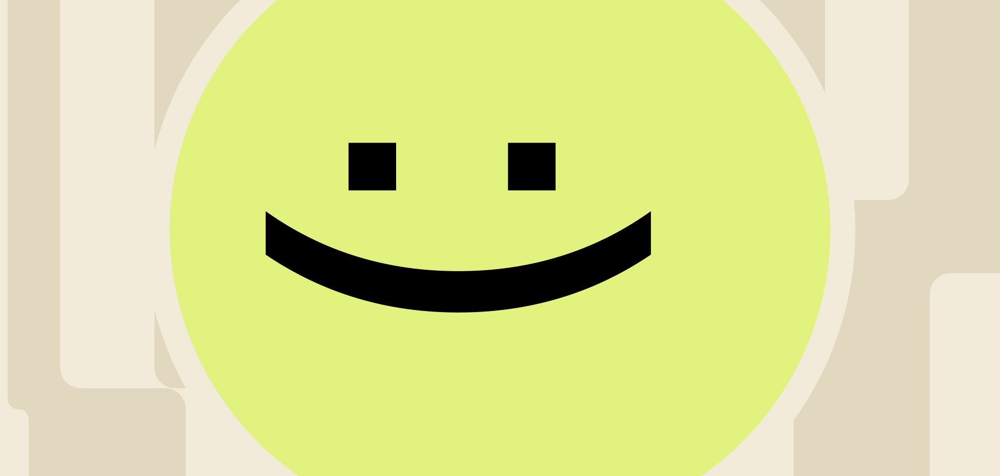

В классическом продуктовом дизайне основное внимание уделялось удобству: насколько быстро пользователь достигает цели, насколько понятен интерфейс, сколько шагов требуется для выполнения задачи. В ИИ-продуктах этого уже недостаточно. Пользователь может легко воспользоваться системой — но при этом не доверять ей. И тогда продукт не будет использоваться в действительно важных сценариях. Доверие становится не просто метрикой, а фундаментом всего опыта.
Удобство больше не гарантирует использование
Можно создать идеально понятный интерфейс, сократить количество кликов и ускорить выполнение задач — но если пользователь сомневается в результате, он будет перепроверять или вовсе избегать продукта.
Особенно это заметно в задачах, где есть риск ошибки:
- работа с текстами,
- обучение,
- принятие решений,
- профессиональные инструменты.
В таких сценариях UX без доверия теряет ценность.

Как пользователь оценивает надёжность
Доверие формируется не через одну точку, а через серию взаимодействий. Пользователь постепенно отвечает себе на несколько вопросов:
- совпадают ли ответы системы с реальностью,
- ведёт ли она себя последовательно,
- можно ли на неё опереться в будущем.
При этом важна не абсолютная точность, а ощущение предсказуемости. Даже неидеальная система может вызывать доверие, если она ведёт себя стабильно.
Прозрачность против «чёрного ящика»
ИИ часто работает как «чёрный ящик»: пользователь видит результат, но не понимает, как он получен. Это создаёт напряжение. С одной стороны, магия впечатляет. С другой — вызывает осторожность. Дизайн должен находить баланс: не перегружать пользователя сложными объяснениями, но давать ориентиры, насколько результат надёжен. Это может быть выражено через тон ответа, формулировки, сигналы уверенности или возможность уточнить источник.
Поведение системы как «характер»
Пользователь начинает воспринимать ИИ не как инструмент, а как сущность с определённым поведением.
Возникают ожидания:
- система не должна противоречить сама себе,
- должна «помнить» контекст,
- должна вести себя логично.
Это уже не только про UX, а про целостность поведения. Нарушение этой целостности воспринимается как потеря надёжности.